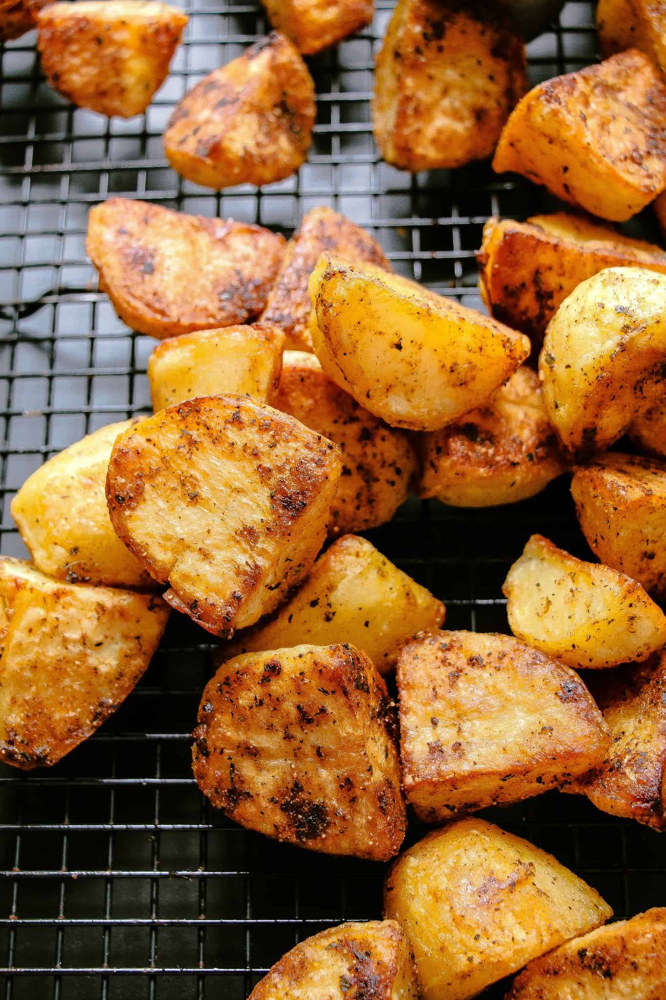
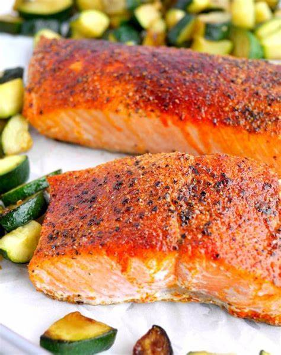

One of my favorite dishes is roasted potates, brown sugar salmon, and roasted califlower. I have made this on a multitude of times. My entire family likes to cook and tries to help out and make a meal. Especially around the holidays the kitchen is a busy place. We don't have a large family but my mom wants to treat everyone to a good meal and normally requires assistance. With me and my two sisters there are plenty of cooks crammed in our kitchen. Much of the time we do most of it while our mother reads the directions.
 